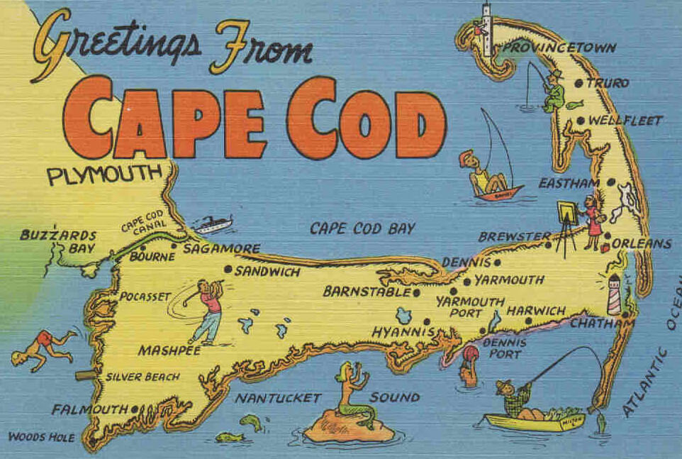

Cape Cod is a peninsula in the state of Massachusetts, of the coast of the Atlantic ocean. Cape Cod is made up of 15 distinct towns, each known for something different. These towns are: Barnstable, Falmouth, Yarmouth, Bourne, Sandwich, Mashpee, Dennis, Harwich, Brewster, Chatham, Orleans, Eastham, Wellfleet, Provincetown, and Truro.